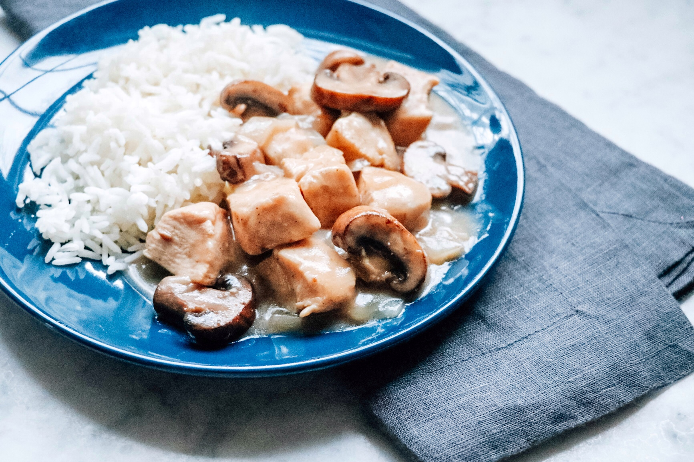

Creamy Chicken Marsala

Description
A delicious chicken and mushroom dish in wine sauce over rice.
- 3 tablespoons of olive oil
- salt and ground black pepper to taste
- 2 skinless, boneless chicken breasts, cut into cubes
- 1 onion, diced
- 1 cup of cremini mushrooms
- 1 (10.75 oz) can condensed cream of mushroom soup
- 1 cup Marsala wine
- Heat olive oil in skillet over medium-high heat
- Season chicken with salt and pepper; cook in hot oil until browned, 3 to 5 minutes
- Stir onion and mushrooms with the chicken, continue cooking until the onion is translucent, 5 to 7 minutes
- Pour cream of mushroom soup and Marsala wine over the chicken mixture; cook until hot and the chicken is no longer pink in the middle, 3 to 5 minutes